Курс "Компьютерная графика как основа будущей профессии"
Компьютерная графика - одно из наиболее развивающихся и пользующихся популярностью направлений в современном мире.
Специалисты в данной обасти пользуются большим спросом на рынке труда. Кроме того, это направление информатики является очень интересным и занимательным.
Поэтому, если Вы интерисуетесь компьютерной графикой, работой в различных графических редакторах и, возможно, хотите связать с этой сферой свою дальнейшую карьеру, то ЭТОТ КУРС ДЛЯ ВАС!
Курс "Компьютерная графика как основа будущей профессии" состоит из трех разделов, направленных на изучение растровой, векторной и трехмерной графики.
А так же включает профессионально-ориентированную часть, в которой мы поговорим о профессиях, связанных со сферой компьютерной графики, и учебных заведениях, где подготавливают специалистов в данной области.
Основы векторной графики
Векторное изображение строится в координатной плоскости.
Если посмотреть на пустой холст в векторном редакторе, то верхний левых угол будет иметь координату (0,0) и считается началом плоскости, в некоторых графических редакторах началом плоскости считается нижний левый угол. Все элементы, размещенные на хосте, имеют координаты. С помощью координат кодируется векторное изображение и после хранится в памяти компьютера.
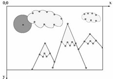
Рис.1. Векторное изображение в координатной плоскости
Базовыми элементами векторной графики являются: точка, линия и кривая. Любую фигуру можно построить на основе графических примитивов, кроме того в векторных редакторах, в качестве инструментов, есть наборы базовых геометрических фигур, которые можно добавить на холст.
Для сохранения векторной картинки в памяти компьютер разбивает сложные фигуры на группы геометрических примитивов.
Далее геометрическим примитивам присваиваются координаты. Точка имеет две координаты (x1, y1), прямая - четыре (x1, y1, x2, y2). Фигуры, в основе которых лежат кривые линии, например круг, строятся с помощью центральной точки и радиуса.
Особенности векторной графики:
- небольшой вес файла;
- четкость при широкоформатной печати;
- возможность работать с отдельными фрагментами изображения;
- небольшой вес файла;
- четкость при широкоформатной печати;
- возможность работать с отдельными фрагментами изображения.
- легкая масштабируемость;
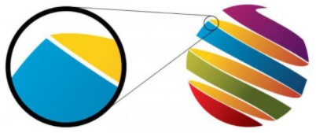
Рис.2. Пример масштабирования векторного изображения
Недостатки векторной графики:
- не реалистичность изображения;
- неудобство редактирования (редактирование возможно только в программе, в которой создавалось изображение).
*Видео взято с YouTube канала Design_TV
Форматы векторных изображений:
- PDF – формат, при котором возможно сохранение файла с добавлением анимации, звука и ссылками. Данный формат позволяет сохранять изображения, экономя память устройства, без потери качества.
- SVG - формат для двухмерных векторных изображений. SVG-файлы могут редактироваться программами для работы с векторной графикой, но и некоторыми текстовыми редакторами.SVG позволяет создавать любой файл: изображение, анимацию, веб-иллюстрацию.
- EPS - применяется при подготовке полиграфических документов.
- Наиболее используемым при работе с векторной графикой является формат SVG.
Проверь свои знания!
Изучение основ работы в векторном графическом редакторе Vectr
Графический online-редактор Vectr - векторный графический редактор. Позволяет редактировать и создавать изображения в браузере. По окончании работы в редакторе, изображение можно загрузить на устройство в различных форматах. Панель инструментов сервиса включает:
- инструмент «ручка» позволяющий чертить фигуры с помощью прямой линии;
- инструмент «карандаш» позволяет добавлять объекты, созданные от руки;
- инструменты элипс, квадрат позволяют добавлять фигуры на холст;
- инструмент «текст» позволяющий добавлять текстовые записи, регулировать шрифт и размер надписи;
- инструменты для работы с объектом (фон, границы, тень, заливка).
Узнать об инструментах и их применении подробнее Вы сможете, посмотрев видео.
*Видео взято с YouTube канала Татьяны Дроновой
Задание:
1. Ознакомиться с инструментами сервиса Vectr.
2. Создать в сервисе изображение, аналогичное картинке ниже:
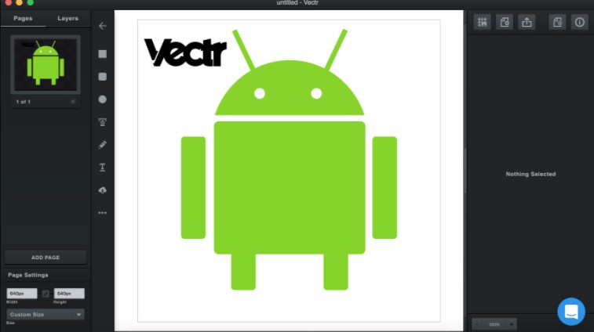
Рис.1. Образец задания
Выполненное изображение отправьте на почту prigoda09@gmail.com. Желаю успехов!
Профессии, связанные с обработкой векторных изображений
Иллюстратор — это узкопрофильный художник, который создает изображение основываясь на тексте. Он визуализирует написанное, так, чтобы читающему было понятно о чем идет речь. Иллюстраторы, как пправило, работают в определенном направлении:
- реализм
- гротеск
- минимализм
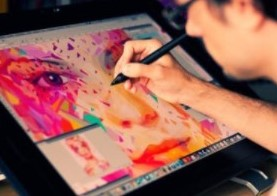
Рис.1. Графический иллюстратор за работой
В свою очередь они имеют различные техники исполнения:
- традиционные, в которых используется классический инструментарий художника
- современные, с использованием различных гаджетов и компьютерных программ
Чем занимается иллюстратор?
Существует несколько направлений данной специальности:
- Детский иллюстратор. В основном занимается рисованием для детских книг и мультиков. У такой иллюстрации есть своя специфика, очень часто мы можем видеть, что персонажи прорисованы, как будто нетвердой детской рукой. Этот стиль является нарочитым и называется — наив, именно он лучше всего воспринимается маленькими детьми
- Художник-иллюстратор. Может заниматься изображением объектов для книг, журналов, сайтов и в целом любой работой, которая отвечает его авторскому стилю или навыкам. Например, ботанической иллюстрацией: она используется в учебниках или рисованием плакатов, или книжных обложек
- Fashion-иллюстратор. Его работа заключается в том, чтобы создавать скетчи, картинки, рекламу, обложки и т.д. в стиле фэшн. Это могут быть любые элементы, принадлежащие миру моды: начиная от парфюма и аксессуаров, заканчивая зарисовками модных показов
- Aрхитектурный иллюстратор. Тот, кто добавит жизни в унылый чертеж. Его задача визуализировать архитектурный проект: в связке с реальным ландшафтом показать детали будущего строения. Часто его работы используются в презентациях объекта;
Если у Вас еще остались вопросы, более подробно о професии Вы можнете узнать, посмотрев интервью с представителем данной професии.
* Видео взято с YouTube канала MMCO 2020
Где работает иллюстратор?
Если говорить об официальном трудоустройстве, то иллюстраторов с удовольствием примут на работу в: дизайн-студии; издательства; мультипликационные студии; студии гейм-дизайна.
Работа в векторном графическом редакторе Sketchpad
Каждая организация должна иметь свой фирменный, опознавательный знак - логотип. По логотипу можно определить в какой сфере работает организация и даже узнать некоторые особенности.
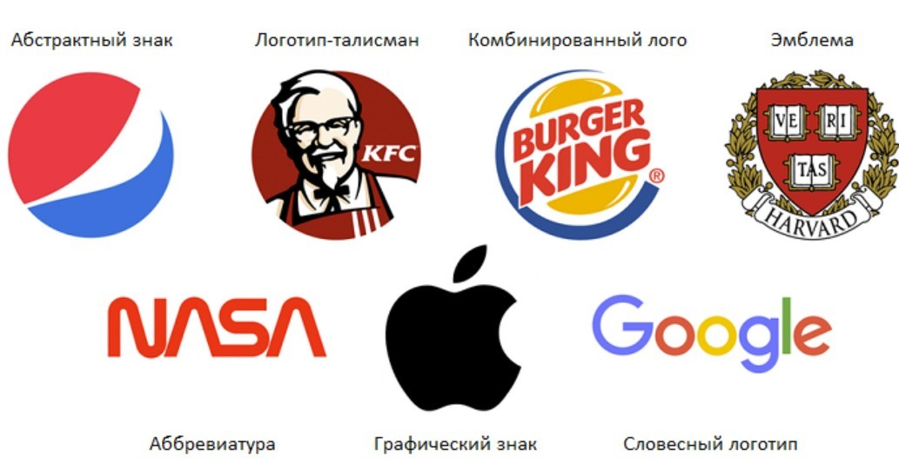
Рис.1. Виды логотипов
Создание логотипа - задача графического дизайнера. Логотипы разрабатываются в векторной графике для удобства использования изображения.
Для создания логотипа используют: условный знак, отражающий работу организации, название организации, выполненное в оригинальном шрифте.
Правила для создания логотипа:придерживаться единого стиля, запоминаемость знака, информативность изображения, не перегружать изображение (следить за количеством объектов).
Выполните упражнение:
Задание: создайте свой собственный логотип в графическом редакторе Sketchpad.
Ниже размещены задания, выполните свой вариант в соответствии с номером в списке класса
Вариант №1
«Здравствуйте, компания Ecofarm просит Вашей помощи в создании логотипа нашей компании. Наша компания занимается производством и продажей фермерской продукции. Символ нашей организации – корова. Принцип нашей работы – производство вкусной и натуральной продукции. Работу нужно отправить на почту: shulyk09@gmail.com.».
Вариант №2
«Здравствуйте, фонд Zoohelp просит Вашей помощи в создании логотипа нашего фонда. Наш фонд занимается поддержкой местных зоопарков. Символ нашего фонда – зебра. Мы поставляем местным зоопаркам питание и медикаменты для животных. Работу нужно отправить на почту: shulyk09@gmail.com.».
Вариант №3
«Здравствуйте, компания Fly to Sky просит Вашей помощи в создании логотипа нашей компании. Наша компания занимается авиаперевозками. Символ нашей организации – самолет. Хотим, чтобы в логотипе отражалось название и символ нашей организации. Работу нужно отправить на почту: shulyk09@gmail.com.».
Вариант №4
«Здравствуйте, компания UniqPlant просит Вашей помощи в создании логотипа нашей компании. Наша компания занимается производством редких растений. У наей организации нет символа. Хотим, чтобы в логотипе отражалось название компании. Работу нужно отправить на почту: shulyk09@gmail.com.».
Вариант №5
«Здравствуйте, сообщество любителей животных просит Вашей помощи в создании логотипа нашего сообщества. Мы занимаемся поиском бездомных животных на улице и находим для них новый дом. У нашего сообщества нет символа. Первое животное, которое мы спасли была собака. Мы не смогли придумать название для нашего сообщества. Думаем, вы справитесь! Работу нужно отправить на почту: shulyk09@gmail.com.».
Основы растровой графики
Растровое изображение, напоминает мозайку, так как состоит из множества маленьких частей - пикселей. Пиксель - единичный элемент растровой графики , а растровое изображение состоит из сетки пикселей.
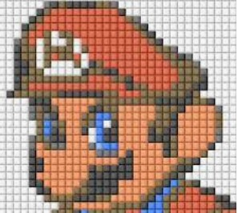
Рис.1. Увеличенное растровое изображение
Как узнать сколько пикселей содержит одно изображение? С помощью разрешения изображения. Например, расширение изображения 400x600px, тогда изображение состоит из 400 точек по вертикали и 600 точек по горизонтали. Значит общее количество пикселей изображения - 240000.
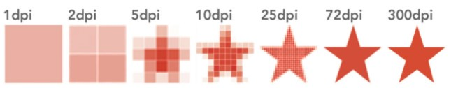
Рис.2. Зависимость качества изображения от параметра Расширение
Каждый пиксель изображения имеет свой вес, из суммы веса всех пикселей получается вес изображения.
Любое изображение сохраняется в каком-либо формате. Наиболее популярные форматы растровых изображений:
- JPEG (16-битный формат, который используют многие цифровые камеры)
- GIF (формат ограничен 256 цветами, поддерживает анимацию)
- PNG (комбинация GIF и PNG)
Преимуществами растровой графики являются:
- возможность создания изображения любой сложности
- реалистичность изображения
- цветопередача
- возможность редактирования изображения в любом графическом редакторe
Недостатки растровой графики:
- большой объем изображения (чем больше пикселей, тем больше объем)
- невозможность масштабирования без потери качества изображения
Основные характеристики:
- Глубина цвета - количество памяти, выражающееся в битах, для хранения кода цвета . Глубина цвета определяет максимально возможное количество цветов изображения, исходя из количества бит отведенного для кодирования одного пиксела. Например, если глубина цвета составляет 5 бит, то максимальное количество цветов для изображения - 32.
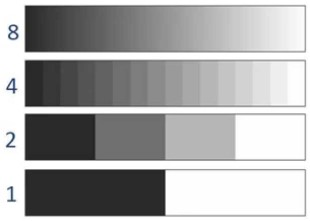
Рис.3. Зависимость качества цветопередачи изображения от параметра Глубина цвета
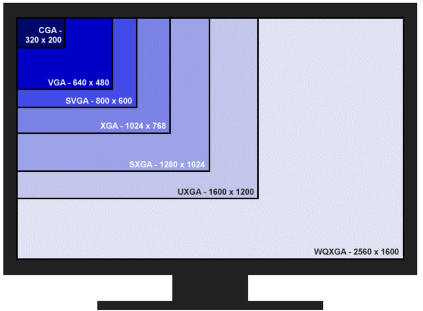
Рис.4. Пример: несколько изображений с разным расширением на экране монитора
Более подробно узнать о растровой графике Вы можете, посмотрев видео.
*Видео взято с YouTube канала School info vids
Создание изображения в растровом графическом редакторе Pixlr
Графический online-редактор Pixlr - это растровый графический редактор. Работа в программе не требует регистрации, но чтобы иметь доступ к библиотекам необходимо зарегистрироваться.
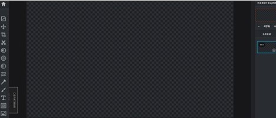
Рис.1. Интерфейс сервиса Pixlr
Графический редактор имеет удобную, широкую панель инструментов, позволяет загружать изображения в различных форматах, а так же по ссылке.
Работа в редакторе временно сохраняется в разделе «История», а воспользовавшись функцией «Закрепить», можно сохранить документ. Сохраненные изображения можно дублировать и редактировать.
Редактор позволяет изменять:
- свойства изображения
- масштаб
- цвет фона
- фильтры
- эффекты
- цветокоррекцию изображения
- выдвигать и сжимать части изображения
- добавить текстовый слой или новое изображение.
Задание:
Выполненное изображение отправьте на почту shulyk09@gmail.com
Давай проверим, насколько хорошо ты разбираешься в инструментах графического редактора?
Профессии, связанные с растровой графикой
Разгадай ребус, чтобы узнать тему урока!
Кто такой ретушер фотографий и чем он занимается?
Ретушер обрабатывает фотографии в графических редакторах (чаще всего Photoshop и Lightroom), доводя их до совершенства. В его обязанности входит работа с цветом, светом, корректировка экспозиции, тона, яркости и насыщенности изображения, кадрирование, исправление различных недостатков оригинальной фотографии. Ретушер может что-то «дорисовать» или наоборот, убрать с фотографии, изменить фон, сделать художественную обработку снимка.
*Видео взято с YouTube канала fotoskladTV
Необходимые навыки и знания:
- владение компьютерными программами для обработки изображений
- знание основ фотографии
- знание основ композиции, правил сочетания цветов
- при работе с фотографиями людей пригодятся знания в области визажа
- могут пригодиться навыки рисования от руки
- художественный вкус
- усидчивость
- внимательность
- умение общаться с людьми
Как стать ретушером фотографий?
- основы ретуши дают в рамках некоторых специальностей в вузах
- освоить профессию ретушера можно на курсах, в том числе и онлайн
- cовершенствоваться в профессии поможет изучение профессиональной литературы
- получить советы от коллег и обратную связь можно на профессиональных форумах и в соц. сетях
Не забудь пройти опрос!
Основы ретуши фотографий в облачном сервисе Pixlr
Чтобы начать работу, скачайте и загрузите изображение в сервис.
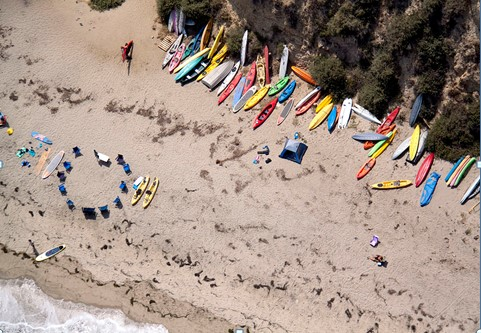
Рис.1. Изображение для обработки
1. С помощью инструмента ретушь можно удались фрагменты изображения. Удалите лодку у воды и человека, сидящего в правой части изображения. Использовать инструмент просто, нужно коснуться необходимой области.
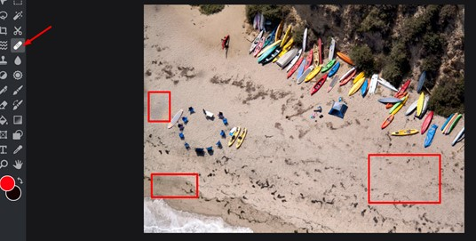
Рис.2. Применение инструмента Ретушь
2. С помощью инструмента «Пластичность» можно изменить размер, объем части изображения. Увеличьте размер палатки, для этого нажмите на часть изображения, подлежащую изменению, и растяните, зажимая левую кнопку мыши в сторону. С инструментом «Пластичность» лучше работать при увеличенном масштабе. Так же при работе можно изменять параметры инструмента, такие как сила и плотность с помощью строки состояния, расположенной сверху. Чем выше данные параметры, тем сильнее сила воздействия и больше площадь воздействия.
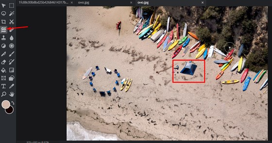
Рис.3. Применение инструмента Пластичность
3. Далее мы будем работать с элементом «Лассо». Данный элемент позволяет скопировать выделенный участок и сохраняет его, как отдельное изображение. Мы будет копировать участок с кругом и перемещать его в правую часть изображения. Это изображение будет накладываться «сверху» на исходное изображение и будет считаться верхним слоем изображения. Выберите инструмент на панели инструментов. Выделите на экране область копирования. На клавиатуре нажмите CTRL+C , затем CTRL+V.
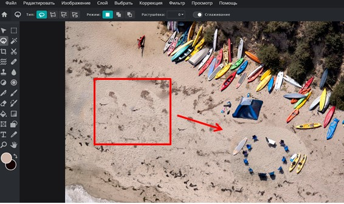
Рис.4. Применение инструмента Лассо
4. Теперь выберете инструмент «Перестроение области» и перенесите изображение в нужное место. Таким же способом закройте часть изображения с кругом в левой части изображением с песком.
5. После того, как Вы добавили несколько новых слоев и установили их в нужных местах, объедините слои с фоновым изображением. Для этого щелкните правой кнопкой мыши на один из слоев и выберите «Объединить со слоем ниже. Те же действие необходимо повторить для остальных слоев.
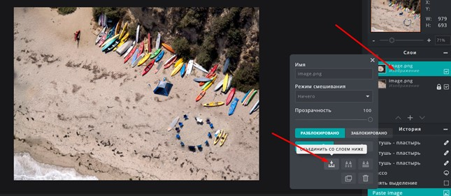
Рис.5. Работа со слоями
6. После этого можно стереть явные границы слоев с фоновым изображением с помощью инструмента «Ретушь».Результат работы отправьте на электронную почту shulyk09@gmail.com
Цветокоррекция изображения и добавление эффектов в сервисе Adobe Lightroom
Посмотрите обучающее видео, скачайте изображение. Выполните поэтапно цветокоррекцию избражения, как показано в примере. Сравните результат, подготовьте отчет.
План работы:
- Яркость/контрастность
- Температура
- Насыщенность
- Сочность
- Блики и тени
- Экспозиция
- Виньетка
- Фильтр
Изображение для обработки
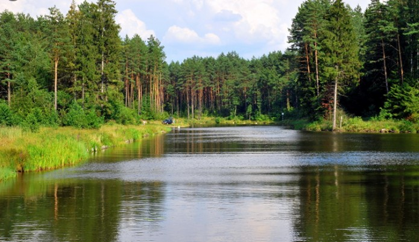
Результат работы отправьте на электронную почту shulyk09@gmail.com
Знакомство с особенностями трехмерной графики
Трёхмерная графика (3D Graphics) — раздел компьютерной графики, совокупность приемов и инструментов (как программных, так и аппаратных), предназначенных для изображения объёмных объектов .
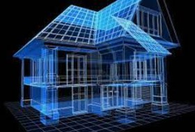
Рис.1. Пример трехмерного изображения
Трёхмерное изображение на плоскости отличается от двумерного тем, что включает построение геометрической проекции трёхмерной модели сцены на плоскость (например, экран компьютера) с помощью специализированных программ.
Для получения трёхмерного изображения на плоскости требуются следующие шаги:
- моделирование — создание трёхмерной математической модели сцены и объектов в ней.
- рендеринг (визуализация) — построение проекции в соответствии с выбранной физической моделью.
- вывод полученного изображения на устройство вывода — дисплей или принтер.
С развитием высоких технологий большую популярность приобретает трехмернаяграфика (3D). Именно она позволяет создавать различные объемные объекты: от макетов зданий до проекций новых миров.
Таким образом, среди множества областей применения 3D-графики основными являются:
- 3D-моделирование. Посредством специальных программ разрабатываются игровые или фотореалистичные модели существующих или планируемых объектов. Создаваемые модели могут использоваться в играх, рекламных роликах, презентациях и так далее.
- Визуализация. Технология 3D позволяет с высокой точностью визуализировать архитектурные и иные объекты. Данный метод используется в архитектуре, сфере интерьерного дизайна, а также для оформления различных выставочных стендов и мест продаж.
- Анимация - это серия отдельных изображений, формирующих видеоряд. Наиболее распространенный метод анимации называется - ключевая анимация или анимация по ключевым кадрам. Ключевые кадры задают основные стадии действия, промежуточные кадры между ними программа рассчитывает сама. Основные варианты анимации включают изменение размера, вращение и передвижение объектов.
Более подробно узать о трехмерной графике, Вы можете, посмотрев видео.
*Видео взято с YouTube канала All For All авторы: Денис Королев, Anastasia Gorokhova-Alekseeva, Алиса Кольбе
Проверь свои знания в области трехмерной графики:
Обзор сервисов для обработки трехмерных изображений
Sumo3D - сервис для создания трехмерных моделей. Сервис содержит широкую библиотеку различных фигур. Возможно наложение фигур друг на друга, слияние фигу и создание сечения фигуры.
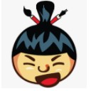
Рис.1. Логотип сервиса Sumo3D
В Paint 3D - сервис для создание трехмерных изображений. Обладает большим функционалом и доступным интерфейсом. В крайнем правом углу вы найдете графические инструменты, где вы можете выбрать различные кисти и другие инструменты и рисовать ими.
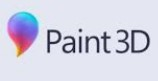
Рис.2. Логотип сервиса Paint 3D
С помощью кнопки «2D» у вас есть возможность создавать двумерные фигуры.
Справа находится кнопка «3D», которая вам понадобится, если вы захотите добавить к вашему изображению различные 3D-модели и фигуры.
Рядом с кнопкой «3D» вы можете найти кнопку «Наклейка», их можно разместить на трехмерном объекте.
Кнопка «Эффекты» позволяет применять различные фильтры или изменять уровень освещения вашего изображения.
Кнопка «Remix 3D», содержит различные 3D-модели, которые были загружены пользователями.
Вы можете помотреть обзор на перечисленные сервисы в видео
Профессии, связанные с трехмерной графикой
- 3D-дизайн – это одно из направлений графического дизайна. С его помощью можно визуализировать идею, которая находится ещё в разработке. То есть, создать проект в виртуальном пространстве с максимальной реалистичностью. Кто может создавать такие объекты вы узнаете из этой статьи.
- 3D-дизайнер — это специалист по оформлениюперсонажей игр, текстур,и других трёхмерных объектов. Объемная графика используется в разных направлениях от дизайна интерьеров и ландшафтов до оформления рекламных баннеров, видеороликов и одежды. В зависимости от сферы, специалисты различаются по виду деятельности.
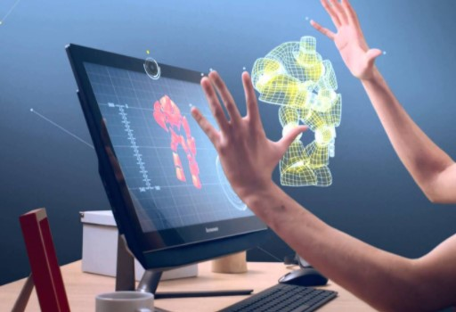
Рис.1. Интерпритация работы с трехмерной графикой
Чтобы узнать о профессии 3D-дизайнера, посмотрите видеоролик.
* Видео взято с YouTube канала Any School Уроки SketchUp и V-ray
Где учиться?
Высшие учебные заведения, подготавливающие специалистов в области 3D дизайна:
- Институт Институт общественных наук РАНХиГС (направление: современный дизайн)
- Национальный исследовательский университет "Высшая школа экономики" (направление: коммуникации, медиа и дизайн)
- МИРЭА – Российский технологический университет (направлнения: информационные системы и технологии, программная инженерия, дизайн)
Не забудь пройти опрос!
Создание трехмерных изображений в облачном сервисе Paint 3D
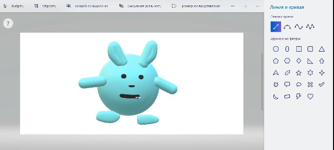
Рис.1. Создание трехмерного изображения в сервисе Paint 3D
- Посмотрите видеоурок по созданию трехмерного избражения.
- Попробуйте сделать трехмерное изображение по примеру.
- Придумайте и создайте собственное трехмерное изображение.
- Отправьте результат на электронную почту: shulyk09@gmail.com
Обратите внимание!Элементы трехмерной графики необходимо группировать между собой, чтобы изображение было целостным.
У Вас все получится!
Создание анимации в сервисе Sumopaint
На данно уроке мы будем создавать анимированное изображение с помощью метода кадрирования. Создание анимации будет происходить в два этапа.
Первый этап:
На данном этапе нужно создать восемь одинаковых изображений путем дублирования одного изображения. Далее, начиная со второго изображения, нам нужно вносить ПОСЛЕДОВАТЕЛЬНЫЕ и СВЯЗАННЫЕ между собой изменения в изображения. После этого, необходимо поместить все изображения в общую папку и пронумеровать изображения цифрами 1-8.
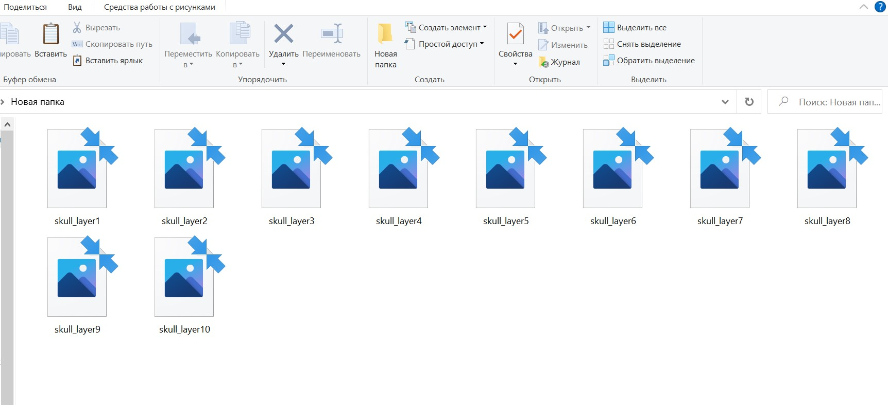
Рис.1. Создание избражений
Второй этап:
На данном этапе мы будем "склеивать" получившиеся изображения в сервисе Sumo. Для этого перейдите в видеоредактор Sumo и загрузите изображения в сервис. Устанавите длительность и последовательность изображений. Помните! Что конец демонстрации первого избражения, является началом демонстрации второго, и так далее.
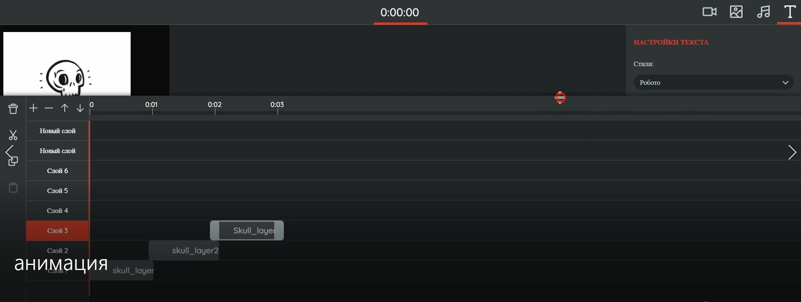
Рис.2. Создание анимации
Вы можете посмотреть видеоурок по созданию анимации в сервисе Sumo:
Задание 1. Итоговый тест по курсу "Компьютерная графика как основа будущей профессии"
Тест размещен в сервисе ClassMarker, для прохождения кликните по ссылке:
Задание 2. Практическая работа
Вам предстоит продемонстрировать полученные умения и навыки обработки изображений на практике. План работы с изображением:
1. Ретушь фрагментов изображения.
2. Работа со слоями изображения.
3. Совмещение слоев, ретушь изображения.
4. Цветокоррекция изображения.
Изображение для обработки:
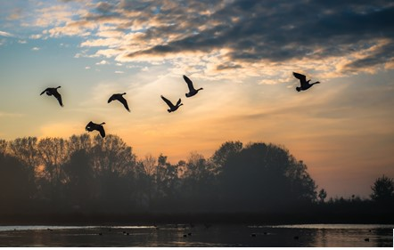
Результат работы: